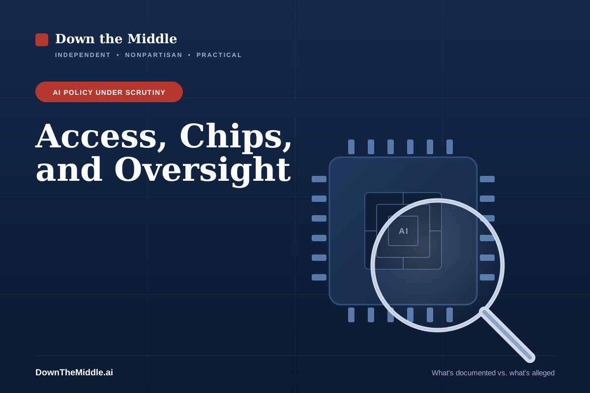

One CEO, Vast Influence Over U.S. AI Policy — and a Scandal Testing It
November 12, 2026 · Updated November 13, 2026 · Independent, nonpartisan analysis

By the numbers
The documented figures behind the story.
For most of the past two years, Nvidia chief executive Jensen Huang has had something very few business leaders ever get: a direct line to the president and real influence over a signature national policy—what America does and doesn’t sell to China. This week, that relationship is at the center of a widening controversy. Sorting the documented facts from the sensational allegations is exactly the kind of work this is for.
What’s documented
Huang’s access is a matter of record. He and President Trump have met repeatedly since January 2025—at the White House, during a U.K. state visit, and on a 2026 trip to China, per Reuters. In March 2026 he was named to the President’s Council of Advisors on Science and Technology. In October 2026 Trump awarded him the National Medal of Science. [2]
That access tracked with a major policy reversal. In April 2025 the administration required a license to export Nvidia’s China-specific H20 chip, curbing sales that had brought in about $2.5 billion in a single quarter. After months of lobbying by Huang and a pledge to invest heavily in U.S. manufacturing, Nvidia resumed H20 sales in July 2025 following an Oval Office meeting. [1]
Then came the part almost no one had seen before. In August 2025, Trump announced that Nvidia—and AMD—would pay the U.S. government 15% of their China chip-sales revenue in exchange for the export licenses. By Trump’s own account, he asked for 20% and Huang negotiated it to 15%. The White House said the legal mechanics were still being worked out by the Commerce Department. [1] [3]
Why China policy mattered so much to Nvidia
Revenue from customers headquartered in China (including Hong Kong) as a share of Nvidia’s total revenue, by fiscal year. Nvidia’s fiscal year ends in late January.
Nvidia began counting revenue by where customers are headquartered in its fiscal 2026 annual report and restated earlier years on that basis. The percentages are FourWeekMBA’s calculations from Nvidia’s 10-K and 10-Q filings. The falling share reflects both lost China sales and fast growth everywhere else. [13]
What’s newly alleged — and what happened next
The current firestorm is different, and far less settled. Reuters reports revelations of an affair between Huang and a former executive of a Singapore-based firm; U.S. authorities reportedly concluded the woman was a Chinese intelligence asset, an allegation that has not been proven in any public proceeding. Trump confirmed he discussed the matter with Huang and said Huang told him he had “no idea” she was a spy—adding, “I really believe him.” Trump has said the FBI is looking into it. [2]
Events then moved quickly. On Nov. 8, Nvidia’s board opened an independent investigation, saying it had no reason to believe U.S. national security or Nvidia’s proprietary information had been compromised. In a note to staff, Huang acknowledged he had been “unfaithful to my wife.” [8] [14] On Nov. 11, The New York Times reported a second relationship, this time with an Nvidia executive, and the Wall Street Journal reported that the board was preparing to force Huang out. [4] [15] He resigned the next morning. [5]
How the week unfolded, and who broke each piece
Each step is labeled with the outlet or institution that first made it public. Solid dots are documented events. Dashed dots are reported claims that have not been independently confirmed.
- Oct 29New York Times
U.S. officials believe Alice Huang, a former executive at Singapore-based Nvidia customer Megaspeed, is a Chinese intelligence asset who grew close to Jensen Huang. Nvidia called his interactions with her routine customer contact. [16] - Nov 5House committees
Three Republican House committee chairs (Mast, Moolenaar and Crawford) ask Huang to attend a closed-door briefing on Nov. 18. [10] - Nov 8Nvidia
The board opens an independent investigation, and Huang acknowledges the affair in a note to staff. [8] - Nov 9Court filing
A shareholder class action is filed against Nvidia and Huang, and the stock falls about 4%. [12] - Nov 10The Information
Reports that the relationship helped facilitate at least $7.5 billion in Nvidia chip shipments to Chinese firms. Reuters said it could not verify the report, and the report does not say Huang knew. Unverified [17] - Nov 10ABC News
Rep. Brian Mast says he is prepared to subpoena Huang if he does not respond by Nov. 11. [11] - Nov 11NYT · WSJ
The Times reports a second relationship, with an Nvidia executive. The Journal reports the board is preparing to oust Huang. Shares fall about 8–9% in after-hours trading. [15] [9] - Nov 12Nvidia · SEC filing
Huang resigns, effective immediately. Kress is named interim CEO and Jones board chair. Shares close down 4.3%. [5] [6] - Next
Nvidia reports quarterly earnings on Nov. 17. The requested House briefing is Nov. 18. The board’s investigation and the FBI inquiry are still open. [5] [10]
Nvidia’s share price through the week
Daily closing price, Nov. 5–12, 2026. Hover or tap a point for detail. For scale, the stock hit a record close of $239.24 on Oct. 6.
The Nov. 9 and Nov. 10 closes are estimates calculated from reported percentage moves: about −4.3% on Nov. 9 and −9.6% across Nov. 9–10 combined. The other closes are as reported. The Nov. 5 drop came during a broad selloff in AI chip stocks, before the board’s investigation was announced. [6] [7] [12] [18]
The case critics make
Critics—and they include members of both parties—argue the arrangement was troubling well before any spy allegation. Taking a government cut of specific companies’ sales, they say, turns export-control decisions into something that looks transactional; one policy analyst quoted at the time asked whether the country was “now selling export control licenses.” Rep. John Moolenaar, a Republican, and Rep. Raja Krishnamoorthi, a Democrat, both raised objections. [1]
The appearance questions have since multiplied. Reporting indicates Trump disclosed buying and selling Nvidia stock in 2026, and that Nvidia pledged $25 million toward a White House ballroom project—on top of the medal and the advisory appointment. [2] The Wall Street Journal reports that some administration officials were “aghast” at the 2025 reversal—those wary of Beijing viewed giving Nvidia what it wanted as dangerous—and that officials who raised concerns about chip strategy inside the National Security Council, the State Department, and Commerce’s export-control unit were sidelined or left the administration, while allies including White House AI adviser David Sacks and Commerce Secretary Howard Lutnick helped elevate Huang and counter his critics. If accurate, critics say, that is a picture of a policy shaped by its biggest beneficiary while the people paid to flag the risks were pushed aside. [4]
Pressure has come from both parties
On-the-record actions by lawmakers, before and during this month’s controversy.
Republicans
The case the administration and Huang make
The administration’s argument is about strategy, not favoritism. The H20 is a deliberately slowed, older chip; Trump called it “essentially old” and said China “already has it in a different form.” Keeping Chinese firms dependent on U.S. technology, the argument goes, is better for American leverage than ceding the market to domestic Chinese chipmakers—and the revenue share brings money to the Treasury rather than to any individual. Nvidia has said it follows the rules the government sets, that the H20 “is not a military product,” and that banning it “would only harm U.S. economic and technology leadership.” [1] On the personal allegations, Huang’s known response—relayed by Trump—is that he did not know of any intelligence connection. Nvidia has said his contact with Megaspeed executives was routine. As of this update, no charge has been filed. [2] [16]
Down the middle
Two things can be true at once, and keeping them straight is the whole job here. The espionage and affair allegations are serious but unproven, and a fair reader holds them at arm’s length until an investigation produces findings. At the same time, the governance questions don’t depend on the affair at all: they were raised, on the record and across the aisle, when the 15% deal was announced in 2025.
That is the part that deserves sober attention regardless of how the FBI inquiry ends. When one company’s chief executive has both a financial stake in a policy and unusual sway over it—and when, as the Journal reports, internal skeptics were sidelined—the issue isn’t whether the resulting policy is right or wrong. It’s whether the normal checks that are supposed to test big national-security calls were actually allowed to work. You can support keeping China reliant on American chips and still want that decision pressure-tested by people without a stake in the outcome.
What to watch next
Four threads will tell the story from here. The first is the FBI inquiry and the board’s own investigation, and whether either produces findings. The second is Nvidia’s search for a permanent CEO and its Nov. 17 earnings, its first report without Huang. The third is whether the Nov. 18 House briefing goes ahead now that he has left the company. The fourth is Congress, where lawmakers in both parties have been pushing bills to tighten advanced-chip exports to China—an effort this episode has clearly energized, and one that collides with a planned Trump–Xi meeting on trade. Watch what is proven, not just what is alleged, and watch whether the policy process changes—because that, more than any single personality, is the lasting question. [2]
Sources and primary documents
- [1] TIME — What to Know About Trump’s Nvidia Deal and China’s Response (the H20 reversal and 15% revenue share)
- [2] Reuters, via WHBL — Trump’s ties to Nvidia CEO Jensen Huang in the spotlight (Nov 2026)
- [3] NPR — Trump says Nvidia will hand the U.S. 15% of its H20 chip sales to China (Aug 11, 2025)
- [4] The Wall Street Journal — reporting on Nvidia board deliberations over Huang’s future and on chip-policy dissent inside the administration (Nov 2026). Paywalled; summarized in [9] and [15].
- [5] Nvidia press release via SEC Form 8-K — NVIDIA Announces CEO Transition (Nov 12, 2026)
- [6] CNBC — Nvidia stock closes down over 4% after CEO Jensen Huang announces resignation (Nov 12, 2026)
- [7] CBS News — Nvidia sheds nearly $500 billion in value as Jensen Huang resigns (Nov 12, 2026)
- [8] NBC News — Nvidia opens investigation after CEO Jensen Huang’s affair with alleged Chinese spy (Nov 2026)
- [9] Al Jazeera — Nvidia board weighs Jensen Huang’s future: Can it remove its founder? (Nov 12, 2026)
- [10] GovInfoSecurity — Lawmakers press Nvidia CEO on defenses against foreign spies (Nov 2026)
- [11] ABC News — House Republicans consider issuing subpoena to Nvidia CEO Jensen Huang (Nov 10, 2026)
- [12] Fox News — Nvidia shareholders sue over Huang affair as Trump confirms FBI investigation (Nov 10, 2026)
- [13] FourWeekMBA — How much of Nvidia’s revenue really comes from China (analysis of Nvidia 10-K and 10-Q filings)
- [14] AI Business — Jensen Huang’s future raises questions for AI infrastructure industry (Nov 9, 2026)
- [15] CNBC — Nvidia board meeting to decide CEO Jensen Huang’s fate stretches into evening (Nov 11, 2026)
- [16] SiliconANGLE — Report: Nvidia CEO Jensen Huang was targeted by a Chinese spy (summarizing The New York Times, Oct 29, 2026)
- [17] Sovereign Magazine — Nvidia stock falls for a second day after a report on chip shipments to Chinese firms (relaying Reuters and The Information, Nov 10, 2026)
- [18] Trefis — What sent NVIDIA stock lower? (Nov 6, 2026)
- [19] TipRanks — U.S. senators warn Nvidia CEO Jensen Huang about his trip to China (Jul 2025)
Allegations of an affair and of espionage are reported, attributed to officials and news organizations, and remain unproven; no charge has been filed as of this update. Huang has acknowledged the affair. Policy facts and figures reflect reporting available November 13, 2026, and may be updated. This is analysis, not legal or investment advice.